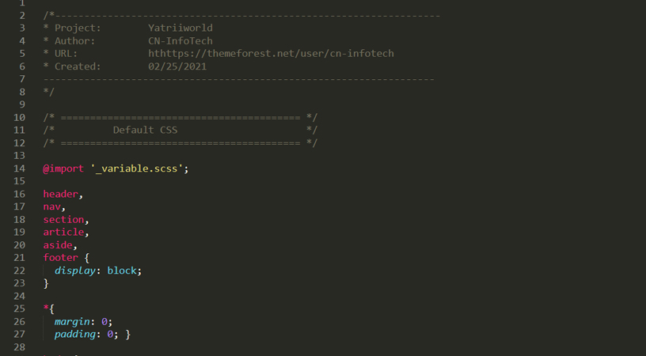
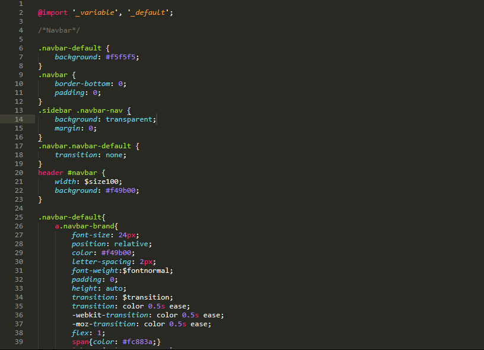
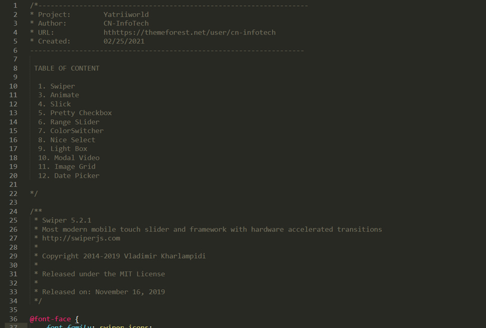
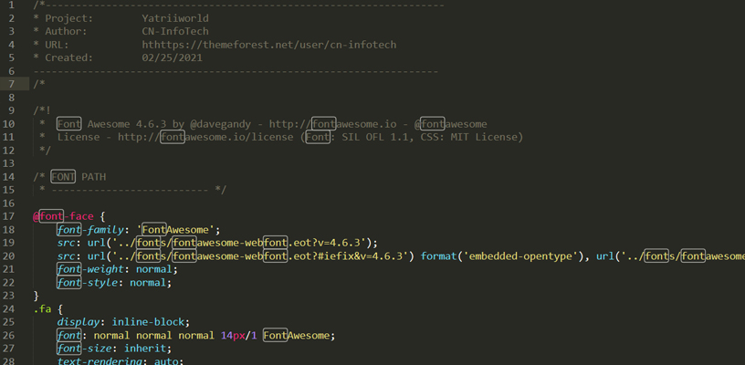
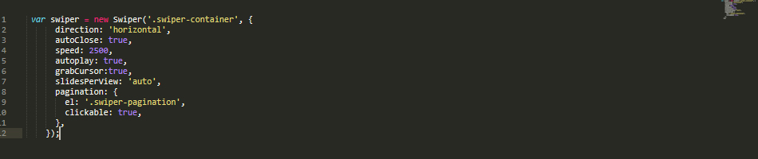
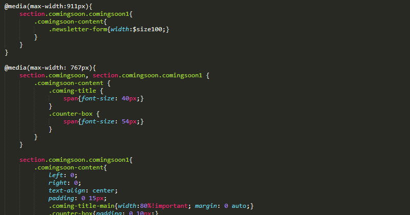

Travel and Tours Booking Template
- Created: 02/25/2021
- Updated: 03/18/2021
- By:CN InfoTech
- Email: cyclone.themes@gmail.com
Yatriiworld is professional multipurpose Travel and Tours Booking Template created especially used for any kind of tourism business website including tour booking, city tour, island tour, sailing, cruise tour operator, trip abroad, honeymoon tour, hotel booking, travel blogging, etc where latest BOOTSTRAP 4 and SASS integration. Easy to use & customize, design & code quality, responsive, creative sliders, flexibility, tons of premade pages, multiple blog options responsive and quick support – these are the outstanding features and quality to make us stand out from the crowd.
Yatriiworld is designed & developed by planning, designing, and creating them for guaranteeing customer’s happiness and satisfaction.We used latest Bootstrap 4 along with Sass Integration and has smooth animation, clean features, modern and unique design which make your website more beautiful. This template was built in HTML5 and CSS3, with parallax image effects and CSS animations to make it even more appealing and dynamic.
Super Features
- 8 Different Homepage
- 5 Flight Pages
- 5 Car Pages
- 5 Train Pages
- 5 Hotel Pages
- 8 Blog Pages
- 9 Destination Pages
- 7 Dashboard Pages
- 21 Other Pages
- Sass Integration
- Fully Responsive Design
- Retina ready
- Neat and clean design
- Clean Code
- Browser Compatibility
- Fontawesome
- Google webfonts
- Extensive Documentation
- All files are well commented
- Working Contact Form
Files and folders structure
Whole template is divided in to several folders and their content defines by the folder names easily.
Yatriiworld - Travel and Tours Booking Template
- Images(all images and backgrounds patterns)
- css
- style.css(main stylesheet)
- bootstrap.min.css(Twitter bootstrap v4.3.1 css)
- plugin.css(related css of used plugin)
- icon.css(related css of used icons)
- js
- jquery-3.3.1.min.js(latest jquery library)
- main.js(Custom js codes for plugins)
- plugin.js(include different js)
- custom-nav.js(use in homepage navigation)
- custom-navscroll.js(custom code use in navigation scroll)
- custom-swiper1.js, custom-swiper2.js and other(for swiper slider custom code)
- chart.js(use for chart analytic in dashboard)
- wickedpicker(plugin for time input)
- Particles(plugin for Comingsoon Page)
- custom-particular.js(custom code use in particles section)
- custom-accordian.js(custom code use in accordian)
- particles.js(plugin code use in particles)
- particlerun.js(custom code use in particles)
- Twitter Bootstrap 4.3.1
- All neccessary item for bootstrap
- Fonts
- Poppins
- Rubik
- Icons
- Fontawesome
- iconsmind(used in dashboard page only)
- ionicons(used in dashboard page only)
- Simple-Line-Icons(used in dashboard page only)
- mail
- contact.php(configuration file for the contact us page form on the website
HTML Structure
Yatriiworld is based on Bootstrap Grid that can help you rapidly develop sites that look beautiful at any size, be it a laptop screen or mobile devices.
The syntax is simple and it's effective cross browser, but the awesome part is that it also has the flexibility to go mobile like a champ. You can really easily customize all part of site or build new.
Step 1: Add HTML container

Step 2: Add row and columns (from one to twelve)

For More information, please visit http://getbootstrap.com/css/#grid
CSS Structure
Step 1: Default CSS Structure
Step 1: Style CSS Structure
Step 1: Plugin CSS Structure
Step 1: Icon CSS Structure
Swiper Slider
You don't need any special markup. Please follow like as below image.
For more informations, please visit https://swiperjs.com/demos/
Note: we have used 3 types of slider of swiper which control by its custom code.
Slick Slider
You don't need any special markup. Please follow like as below image.

For more informations, please visit http://kenwheeler.github.io/slick/
Note: we have used different looks in different pages which are control by its function on slick slider. So, if you want to change then please visit above slick link.
Icons font
Yatriiworld - Mutipurpose Ecommerce HTML5 Template used fontawesome 4/5, Simple-Line-Icons. fonts for its icons requirement and no images has been used for any icon. A complete list of icons along with the class names can be found here:
To use an icon on any page of the theme use the below code:
"fa-name of the class found at the abobe url"
"fab-name of the class found at the abobe url"
"sl sl-icon-name of the class found at the abobe url"
All icons class name will always start with the fa-, fab-, fas- . There are several sizes for icons are predefined in the fonts.css inside css folder. i.e. fa-lg, fa-2x, fa-3x, fab-facebook etc
Images sources
All Images are taken from Pexel & Unsplash. All photos published on Unsplash are licensed under Creative Commons Zero which means you can copy, modify, distribute and use the photos for free, including commercial purposes, without asking permission from or providing attribution to the photographer or Unsplash.
Responsive Version
Here we did very clean responsive on mobile and other device where used slicknav for responsive navigation and other did from css with its own device sizes.
How to Used Sass
Sass lets you use features that don't exist in CSS yet like variables, nesting, mixins, inheritance and other nifty goodies that make writing CSS fun again.
Steps to use Sass
- Create a /Demo folder anywhere on your drive. Like this:
- Inside that folder create two sub folders: /css and /scss. Like this: ...
- Create a .scss file. ...
- Go back to the CMD line for a minute. ...
- Make Sass “watch” your /scss and /css folders. ...
- Edit the .scss file and watch Sass compile it into a .css file.
Source Credits
Once again, thank you so much for purchasing this template. As I said at the beginning, I'd be glad to help you if you have any questions relating to this template. No guarantees, but I'll do my best to assist.
If you have a more general question relating to the template on ThemeForest, basic HTML/CSS/JavaScript related questions, you might consider visiting the forums and asking your question in the "Item Discussion" section.
Best Regards,
CN-InfoTech